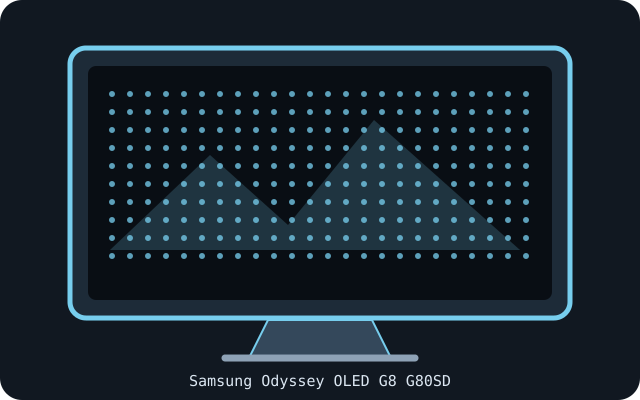

[ INDIVIDUAL COMPONENT // DISPLAYS ]
Samsung Odyssey OLED G8 G80SD (32-inch)
32-inch 4K OLED smart gaming monitor, model family G80SD.

IDENTIFICATION: Confirm the complete model/SKU and region on the rear label. Specifications below reflect manufacturer-published information for this model family; input timings and power supplies may vary with source, firmware, region and operating mode.
Specifications
| Catalog subcategory | OLED displays |
|---|---|
| Exact product / family | Samsung Odyssey OLED G8 G80SD (32-inch) |
| Panel technology / size | 32-inch flat OLED with Quantum Dot color (G80SD family; confirm full regional SKU) |
| Native resolution | 3840 × 2160 |
| Native refresh rate | Up to 240 Hz at native resolution. |
| HDR / luminance / contrast | HDR10, HDR10+ and HDR10+ Gaming support. Samsung lists 250 cd/m² typical brightness and 1,000,000:1 static contrast for the cited US SKU; HDR peak depends on content and test window. |
| Inputs and I/O | 2 × HDMI 2.1; 1 × DisplayPort 1.4; 2 × USB-A hub ports; network and wireless smart-TV functions vary by regional SKU. |
| Stand / VESA | Height, tilt, swivel and pivot stand; VESA 100 × 100 mm. |
| Power | Use the exact regional model's rating label and Samsung manual; power-supply details vary by market and full SKU. |
Signal and compatibility notes
Check the full LS32DG80xx SKU before using region-specific manuals or smart features. 4K/240 Hz requires compatible HDMI 2.1/DisplayPort source and cable. This smart monitor has an OS and wireless features in addition to PC inputs; firmware/app availability is regional. Use OLED care features and avoid long static overlays.
Native resolution and refresh depend on the connected computer's GPU, supported timing, port, cable, firmware, operating system and selected color format. Confirm capabilities in the model-specific manual rather than inferring them from connector shape alone.
OLED care and preservation
OLED panels can retain static imagery. Enable the manufacturer's panel-protection, pixel-shift and refresh features; follow on-screen prompts and documented care intervals. Avoid disconnecting power during a panel maintenance cycle, and record operating hours, firmware, calibration state and image condition for archival systems.
Manufacturer manuals & sources
- Samsung — 32-inch Odyssey OLED G8 G80SD official product specificationsManufacturer-hosted model information; verify the exact regional SKU, revision, and current manual before installation.
- Samsung — official LS32DG800SNXZA support and manualsManufacturer-hosted model information; verify the exact regional SKU, revision, and current manual before installation.